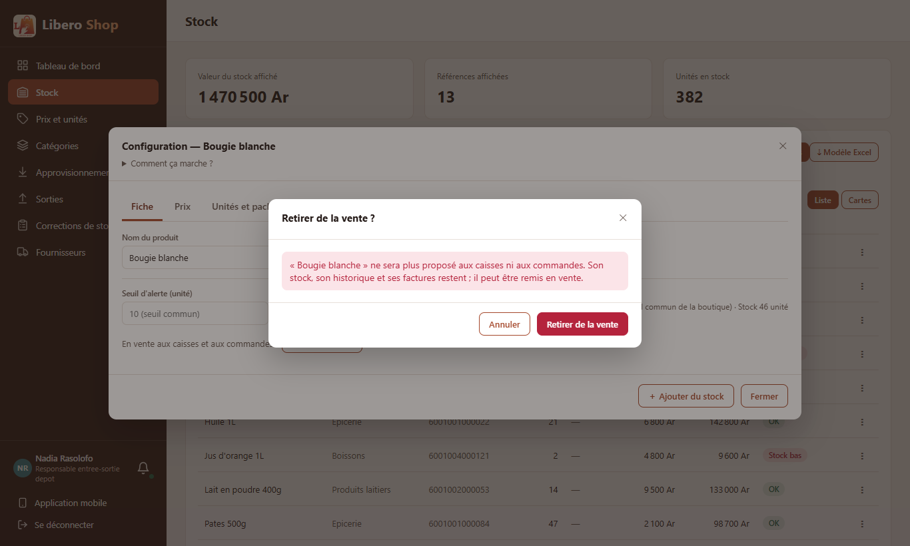
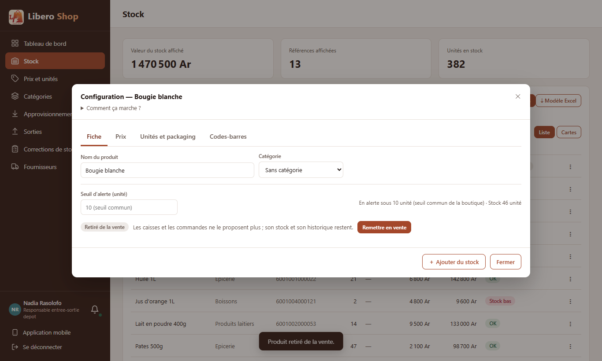
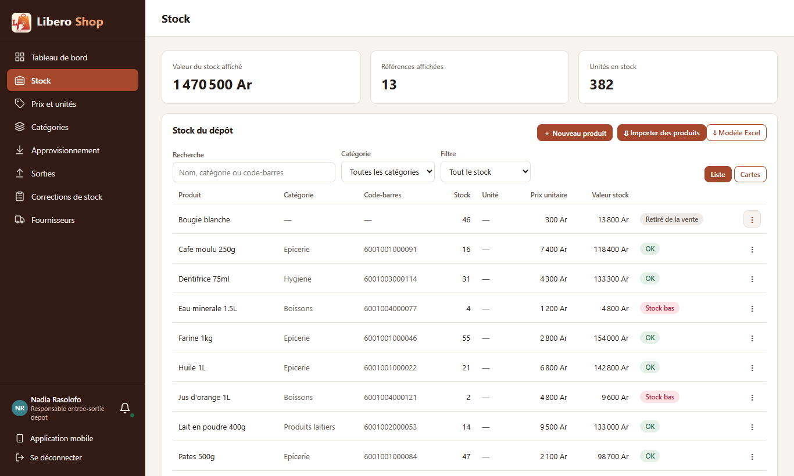
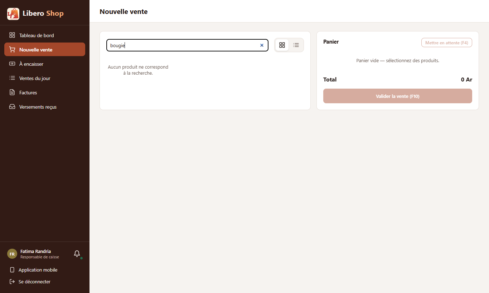

Retirer un produit de la vente
- Un produit peut être retiré de la vente sans être supprimé : son stock, son historique et ses factures restent.
- Retiré, il disparaît des caisses, de la prise de commande et du menu QR ; son code-barres n'est plus reconnu à la vente.
- Une vente qui le contient encore (une caisse restée ouverte) est refusée avec son nom.
- Dans le stock, il reste visible avec le badge « Retiré de la vente » ; on peut encore recevoir, corriger et consulter son historique.
- Le geste se fait dans la configuration du produit, onglet Fiche, avec une confirmation ; « Remettre en vente » l'annule.
1. Le problème
Un article qu'on ne vend plus restait proposé aux caisses. Le supprimer aurait effacé son historique et cassé les anciennes factures. Il fallait pouvoir dire « on ne le vend plus » sans rien perdre.
2. Ce qui a été fait
Côté serveur, toutes les listes des écrans de vente passent déjà par un même filtre : on y a ajouté « encore en vente ». Trois chemins ne passaient pas par là et ont reçu le même test : la lecture d'un code-barres, les meilleures ventes affichées au démarrage de la caisse, et le menu QR. Enfin, l'enregistrement d'une vente refuse un produit retiré : c'est la dernière barrière, pour une caisse restée ouverte avant le retrait.
3. Le résultat en images
Nadia — responsable de dépôt « Bougie blanche » ne se vend plus.



Fatima — caisse

4. Et l'import de produits ?
Un fichier qui contient un produit retiré le reconnaît (même nom ou même code-barres) : les quantités s'ajoutent à son stock, sans le remettre en vente. Sinon l'import tenterait de créer un doublon, refusé par le code-barres unique. Le remettre en vente reste un geste volontaire.
5. Tableau récapitulatif
| Fichier | Changement |
|---|---|
backend/…/entity/Product.java | colonne retired, fausse pour tous les produits existants |
backend/…/repository/ProductSpecifications.java, service/ProductSearchService.java | filtre « en vente » commun ; code-barres et meilleures ventes |
backend/…/repository/ProductRepository.java | les comptes des rayons ne comptent que les produits en vente |
backend/…/service/OnlineOrderService.java | menu QR sans les produits retirés |
backend/…/service/SaleService.java | vente refusée : PRODUCT_RETIRED |
backend/…/service/ProductEditService.java, web/ProductController.java, web/dto/RetiredRequest.java | PUT /api/products/{id}/retired |
ui/…/shared/components/product-units-dialog.component.ts | « Retirer de la vente / Remettre en vente » dans l'onglet Fiche, avec confirmation |
ui/…/shared/components/status-badges.component.ts, stock-table, product-card | badge « Retiré de la vente » |
ui/…/core/sale/product-finder.ts | une caisse ouverte retire le produit de sa grille dès qu'elle est prévenue |
| Règle | Test |
|---|---|
| Ni par le nom, ni par le code, ni dans les meilleures ventes | ProductSearchServiceTest — produitRetireHorsDesEcransDeVente |
| Vente refusée, stock inchangé | SaleStockShortageTest — venteDUnProduitRetireRefusee |
| Retirer ne touche pas au stock ; remettre en vente l'annule | ProductEditServiceTest — retirerPuisRemettreEnVente |
| Confirmation demandée avant le retrait | product-units-dialog.component.spec.ts |
Tests : serveur au vert, interface au vert (238 tests).